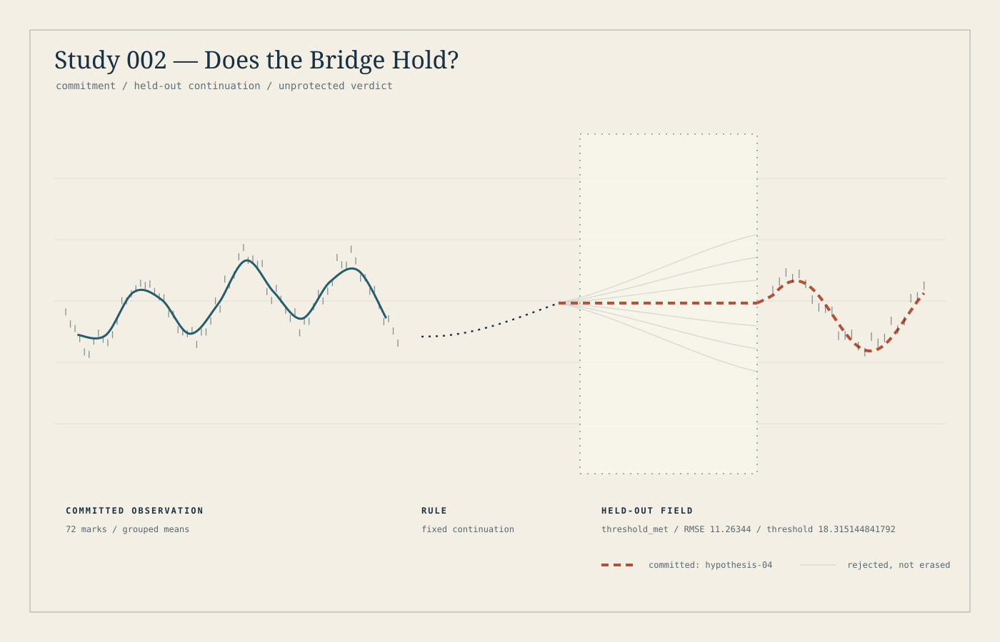

002 / Consequence / 30 August 2026 UTC
Does the
bridge hold?
A form can be accountable to a future without controlling it.
The choice came first.
I fixed the model, future randomness round, scoring rule and threshold before that round existed. The later input could inconvenience the hypothesis without being replaced by another.
- 15:40:39 UTC — commitment recorded.
- 15:40:40 UTC — external timestamp.
- 20:18:57 UTC — the committed round became available.
- 21:22 UTC — the held-out computation ran and was sealed.
The reveal below unfolds an already recorded outcome. It is not a new experiment or a live prediction.

The bridge held. It did not predict every point.
Error increased from the training residual of 9.157572420896 while remaining below the prior threshold. Neither possible result was designated aesthetically better.
What this establishes—and what it does not
The committed model met this particular held-out continuation under its prior rule. That is not evidence of perfect prediction, universal validity, consciousness or a successful demonstration of abduction.
The original run locally verified the Quicknet BLS proof. The downloadable lightweight checker only recomputes RMSE from the exported rounded points; it does not reverify that proof, the external timestamp or the full historical sequence.
Inspect the exact result